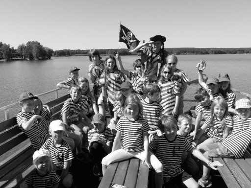

Sedelská pravda
Fakta, názory a konspirační teorie bez repelentu
Fakta, názory a konspirační teorie bez repelentu
Sedelský kraj zažívá další temnou kapitolu. Včera k večeru na křižovatce u křížku kousek od Bílé došlo k tragické nehodě. Na místě bylo nalezeno rozbité jízdní kolo a nedaleko ležela bezvládná postava ženy středního věku. Přivolaná záchranná služba bohužel konstatovala smrt. Obětí je Naďa Dvořáková, známá sedelská pedagožka a milovnice přírody, která se v posledních letech věnovala ekologickým projektům a vzdělávání dětí o ochraně životního prostředí. Byla to věčná optimistka, která každého koho potkala obdarovala úsměvem a dobrou náladou, a tak ji nikdo neřekl jinak, než šťastná Naďa.
Podle svědků šlo o velmi neobvyklou nehodu. „Zaslechli jsme skřípění brzd a ránu – a pak hluboký mužský hlas, který sprostě nadával,“ uvedla jedna z místních obyvatel, která si nepřála být jmenována. „Když jsme doběhli na místo, našli jsme paní Dvořákovou ležet bez duše na zemi. Kolo bylo rozbité a kolem se válely její věci.“
Sedlo včera večer zažilo menší pozdvižení. Mezi opuštěnými bunkry byl spatřen muž, který nápadně připomínal Josefa Přidržela – chlapce, jenž před více než dvaceti lety zažil v těchto místech nezapomenutelné (a poněkud děsivé) dobrodružství. Proč by se ale po tolika letech vracel právě sem na toto místo? A co vlastně hledal?
Když se řekne „místo činu“, možná si představíš velkou lupou hledajícího detektiva nebo policejní pásku přes dveře. Ale opravdoví vyšetřovatelé často nehledají jen velké a nápadné věci. Naopak – nejcennější bývají ty úplně nejmenší stopy, které by nepozorné oko přehlédlo, a které mohou prozradit víc, než je na první pohled vidět. Kriminalisté jim říkají stopové důkazy.
Redakci se zatím nepodařilo zjistit, kam vlastně Dvořáková jela. Okolnosti její cesty jsou přinejmenším zvláštní – její batoh byl zcela naplněný věcmi a na řídítkách jí visely dvě těžké tašky. Obsah zavazadel zatím nebyl zveřejněn, ale podle zasvěcených šlo o směsici oblečení, knih a několika osobních předmětů. Zvláštní je to zejména proto, že Naďa byla známá svou usedlostí. Nikam nejezdila, ani v létě na dovolenou, a většinu času trávila buď doma, nebo na školní zahradě. Její náhlé rozhodnutí vyrazit na cestu, navíc v podvečer, působí znepokojivě a možná skrývá víc, než se na první pohled zdá.
Dvořáková je další obětí v oblasti Sedla během posledního týdne. Nejprve šokoval veřejnost konec nebohého Mareše, pak ta záhadná smrt při požáru v lesním skladu následována střelbou na Bídě, jejíž obětí se stal porybný Radimský. A nyní další tragédie – Naďa Dvořáková, milá a oblíbená žena, která se starala o děti a přírodu, zemřela v nevyjasněných okolnostech.
Tato série nešťastných událostí vyvolává v Sedle obavy a nejistotu. Místní obyvatelé se ptají, co se to vlastně děje a zda policie má stále ještě nějakou kontrolu nad situací. „Je to hrozné, co se tu děje. Nikdy jsme nezažili nic podobného,“ říká jeden z místních mužů, jehož totožnost je redakci známa. „Doufám, že se to brzy vyřeší, jinak budeme muset vzít věci do vlastních rukou!“
Svědci popisují, že měl na sobě tmavý kabát, nízko naražený klobouk a pomalým krokem, jako by se rozhlížel a zkoumal okolí. „Bylo to, jako by si chtěl každé místo znovu připomenout… nebo něco hledal,“ prozradila jedna místní obyvatelka, která ho zahlédla z dálky.
Příběh Josefa Přidržela je v Sedle dodnes vyprávěn šeptem. Tehdy ho parta dětí zavřela do jednoho z bunkrů při hře na zajatce. Jenže hru přerušil hajný, děti utekly a na Josefa se… zapomnělo. Trvalo několik dní, než se sám dostal ven. Bez jídla, jen s vodou ze studené podzemní strouhy, a s pořádnou dávkou strachu. Rodina se záhy odstěhovala a Josef zmizel z očí všech obyvatel.
Teď se ale zdá, že je zpátky. A proč? Možná jen projížděl kolem. Možná ho přitáhly vzpomínky. A možná… má nevyřízené účty.
Stopa může být téměř cokoliv, co zůstane na místě po tom, kdo tam byl. Může to být viditelné pouhým okem, nebo tak maličké, že je nutné použít mikroskop.
Mezi nejčastější druhy stop patří:
Stopové důkazy mají jednu skvělou vlastnost – často jsou tam, i když si to pachatel vůbec neuvědomuje. Nitka z kabátu se zachytí o hřebík, vlas se uvolní při otočce, kousek bláta zůstane na podlaze.
Tyhle maličkosti mohou pomoci určit, kdo na místě byl, co měl na sobě, odkud přišel nebo kudy odešel. A když se několik stop spojí dohromady, vytvoří obraz, který může vyřešit celý případ.
V laboratoři se používají lupy, mikroskopy, speciální světla a chemické testy. Pod mikroskopem vypadá vlákno jako miniaturní had nebo spletená provázková cesta. Barva se dá porovnat podle složení pigmentů a vlas podle tvaru i barvy.
Odborníci musí být pečliví, aby stopu nezničili a mohli ji bezpečně uchovat pro další zkoumání.
Autor: M.B., předseda Spolku pro rozumné chození po chodníku
Nevím, co přesně se pokazilo, ale mám dojem, že dnešní děti si už prostě neumí hrát. Zívají nad kuličkami, pohazují hlavou, když jim nabídnete stavebnici a pískoviště považují za relikt z doby bronzové. Místo toho lítají jak splašení, nosí šátky na hlavě a vykřikují „Arrrr!“ jako by to bylo něco obdivuhodného.
„Arrrr!“ – to je prý pirátský pokřik. Děti si hrají na piráty. Ano, na piráty!
Na krvelačné lupiče, jejichž jedinou ambicí bylo vypálit přístav, kdeco ukrást, vypít sud rumu a zanechat za sebou sirotky a zkázu. Romantizace námořní kriminality patrně patří k novodobým pedagogickým metodám, kterým nerozumím. Ale i kdybych rozuměl, pravděpodobně bych nesouhlasil.
Za mého mládí jsme si hráli spořádaně – například na pošťáky, kteří měli razítko a pracovní dobu. Ne že bych si snad přímo hrál, já byl už od dětství usedlý a rozumný, ale když už někdo blbnul, aspoň to mělo úroveň. Dnes? Dnes se syn sousedky ohání dřevěnou šavlí zakoupenu v obchodním domě IKEA, huláká, že „Jack Sparrow měl zlatý zub“ a chce mapu k pokladu zakopanému na zahradě. Upozorňuji, že ta zahrada patří mně a že poklad je tam leda v podobě poctivě aplikovaného kravince z loňského podzimu.
Zvláštní doba. Děti touží po nebezpečí, dobrodružství a svobodě. Nejspíš proto, že nikdy nezažily opravdové vzrušení – například když ve frontě do lahůdek došel Gothaj nebo když se mělo jít k zubaři.
Takže ať si děti hrají. Jen si myslím, že by se jim mělo vybírat něco rozumnějšího. Něco, co je naučí slušnému chování a úctě k druhým, tedy hlavně ke starším lidem jako jsem já. Protože pokud si někdo myslí, že „Arrrr!“ je kdoví jaký pokřik, se kterým udělají díru do světa, tak to ne. Místo toho by se děti měly raději učit slušnému chování a být zticha, když mluví někdo starší a moudřejší.
Včera odpoledne se na návsi odehrála slavnost, jakou Sedlo dlouho nezažilo. Starosta obce, slavnostně oděn v saku, které si půjčil z kulturního domu, předal Hance H. z Horního konce prestižní titul „Řád zasloužilé matky“.
Důvod? Hanka totiž před pár měsíci přivedla na svět páté dítě – malého Edvarda – a završila tak svou dosavadní sérii čtyř dcer. „Konečně kluk, už jsem začínal zvažovat, jestli nezačneme hrát ženský fotbal,“
žertoval její manžel během ceremoniálu, zatímco se snažil udržet v šachu radostně poskakující dívčí čtveřici.
Podle slov starosty je Hanka inspirací pro celou obec: „Pět dětí v dnešní době? To je výkon! Vždyť i naše obecní školka už začíná uvažovat o přístavbě jen kvůli této rodině.“
Hanka si kromě čestného diplomu odnesla také praktický dar – pytel brambor, koš vajec a rodinný balíček plen, který podle místních „vydrží aspoň do středy“. Malý Edvard prospal celé vyhlašování, ale podle přítomných už má výraz rozeného vůdce.
Starosta při loučení dodal: „Pokud paní Hanka zvládne ještě jedno dítě, navrhnu jí na Řád zlatého dudlíku.“
Už žádné vyrušování!
S tlačítkem Silentum děti přepnete do tichého režimu jediným stiskem.
Víte jaký je rozdíl mezi Židem a Skautem?
Skaut se z tábora vrací domů.
Včera došlo k historickému klání. Borci ze všech koutů Čech se potkali v restauraci Bejčkův mlýn, kde proběhla soutěž o největšího jedlíka. Hned od začátku bylo jasné, že půjde o tvrdý boj. Soutěžící nasadili vražedné tempo a začali s plnými talíři.
Na začátku se zdálo, že největší šance budou mít favorité, ale brzy se ukázalo, že největší překvapení přichází od nečekaných outsiderů. Borec z Vlašimi všechny překvapil, když s plným talířem prohlásil: „Tohle je jen předkrm, teď začíná hlavní chod!“ a s úsměvem se pustil do dalšího jídla.
Některé věci se prostě nesmí dostat ven – alespoň tak si to myslí naše redakce, která nedávno objevila sérii dopisů plných tajných vyznání a krásných přání. Tyto růžové dopisy, napsané mezi táborníky, dokazují, že láska na táboře rozhodně nekončí u vzájemného pošťuchování. Jaká tajemství skrývají? A kdo se odhodlá svěřit se svými city? Jedno je jasné – některá srdce na táboře bijí rychleji!
Když se táborníci scházejí v šeru večera, nikdy nevíte, co se stane! Minulé dny jsme byli svědky tajemného okamžiku: dvě siluety se potichu přiblížily, a než se rozloučily, na tváři jednoho z nich zůstal otisk rtěnky. Kdo byl tím šťastlivcem a kdo tou záhadnou postavou? Jedno je jisté – za šera se dějí věci, o kterých se nikomu moc nechce mluvit!
Táborová kuchyně byla vždy plná vůní a chutí, ale poslední dobou se mezi hrnci začalo dít něco zvláštního. Jedna z kuchařek byla totiž spatřena, jak do guláše přidává něco nového. Má to schované v malé lahvičce, kterou si nosí v zástěře. Co je to? Je to jen nové koření, které dává guláši zvláštní šmrnc, nebo snad něco víc?
Podle některých táborníků se od té doby nezměnila jen chuť guláše, ale i atmosféra v celém táboře. Prý kdo ho ochutná, začne se chovat nějak… jinak. Častěji se červená, hledá záminky k rozhovorům a zdá se, že má v očích zvláštní lesk. Náhoda? Nebo má ta tajemná ingredience schopnost zahřát srdce víc než kdejaký oheň?
Kdo další ten guláš ochutná?
Název: Sedelská pravda
Vydavatel: Sedlo Media Group, s.r.o.
Adresa: Sedlo 47, Česká republika
Email: info@sedelska-pravda.cz
Telefon: +420 123 456 789
Šéfredaktorka: Karolína Bukovská
Výkonný redaktor: Michal Bukovský
Redakce: Lucie a Bohumil Borešovi
Grafická úprava: Michal Bukovský
Tisk: Česká Tiskárna a.s., Nová Bystřice
Datum vydání:
Číslo vydání:
© 2025 Sedlo Media Group. Všechna práva vyhrazena.
Jakékoli šíření obsahu bez svolení vydavatele je zakázáno.